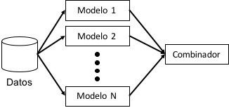

Ensambles de Modelos¶
30 min | Ultima modificación: Junio 22, 2019
Los modelos de regresión logística se caracterizan por buscar entre las relaciones de variables independientes de todo tipo y una variable dependiente categórica o binaria, fronteras de decisión no lineales que clasifiquen dicha variable en una categoría u otra. Se utiliza generalmente para resolver diferentes problemas de clasificación en donde la variable decisión es binaria y de igual forma como modelo base en orden a evaluar modelos mas robustos como bosques aleatorios o modelos de redes neuronales.
Definición¶
Un ensamble es un tipo de modelo que permite la combinación de varios modelos de predicción para obtener un solo pronóstico basado en los pronósticos individuales de cada modelo. En la figura siguiente se presenta un esquema ilustrativo.

La clave de la operación de esta metodología se basa en la diversidad, la cual puede obtenerse de diferentes formas:
Variando los datos de entrenamiento: se usa el mismo modelo en todos los casos, pero para cada uno de ellos se usa una muestra de entrenamiento obtenida por boostraping; así cada modelo tiene parámetros diferentes ya que fue estimado sobre una muestra diferente.
Variando la configuración del modelo: se usan exactamente los mismos datos de entrenamiento, pero sobre diferentes modelos obtenidos variando su configuración; por ejemplo, el mismo modelo pero con diferente configuración (entradas usadas, complejidad, etc). Inclusive se pueden utilizar distintos modelos.
Una combinación de los dos anteriores.
El combinador es un mecanismo que obtiene un único pronóstico a partir de los pronósticos individuales de cada modelo. Para problemas de clasificación, la conbinación se hace por votación. En problemas de regresión, mediante promedio simple, promedio combinado o, inclusive, regresión.
Diferentes metodologías se han desarrollado sobre este concepto.
Bagging (Bootstrap aggregation).— En esta metodología, la diversidad se obtiene al entrenar un mismo modelo sobre diferentes conjuntos de entrenamiento usando bootstraping. La combinación se hace por votación para problemas de clasificación y por promedio para problemas numéricos.
AdaBoosting (Adaptive Boosting).— En este caso, los conjuntos de dato son diseñados especificamente para generar modelos complementarios. De forma simplificada, el algoritmo procede de la siguiente forma:
Paso 1: Se construye un clasificador sobre todos los datos de entrenamiento.
Paso 2: Se construye un nuevo conjunto de datos con los ejemplos mal clasificados (o una porción de ellos).
Paso 3: se construye un nuevo clasificador con los datos obtenidos en el paso 2.
Paso 4: Se retorna al Paso 2.
El proceso itera hasta que se alcanza una precisión requerida o el número máximo de clasificadores permitidos en el ensamble. La ponderación se realiza dando más peso a los modelos con mejor desempeño, de tal forma, que el desempeño es, al menos, similar al del mejor clasificador obtenido.
Random forest.— En este método se combinan el bagging con la selección aleatoria de caracteríticas para aumetar la diversidad. La salida del modelo se obtiene por votación. Cada ejemplo que no es considerado durante el entrenamiento es usado como parte del conjunto de prueba.
Caso de aplicación¶
Preparación¶
[1]:
import pandas as pd
import numpy as np
import seaborn as sns
import matplotlib.pyplot as plt
import altair as alt
%matplotlib inline
%load_ext rpy2.ipython
Carga y preparación¶
[2]:
##
## Lee el archivo.
##
df = pd.read_csv(
"https://raw.githubusercontent.com/jdvelasq/datalabs/master/datasets/credit.csv",
sep = ',',
thousands = None,
decimal = '.',
encoding='latin-1')
##
## Verifica la lectura de los datos
##
df.describe()
[2]:
| months_loan_duration | amount | installment_rate | residence_history | age | existing_credits | default | dependents | |
|---|---|---|---|---|---|---|---|---|
| count | 1000.000000 | 1000.000000 | 1000.000000 | 1000.000000 | 1000.000000 | 1000.000000 | 1000.000000 | 1000.000000 |
| mean | 20.903000 | 3271.258000 | 2.973000 | 2.845000 | 35.546000 | 1.407000 | 1.300000 | 1.155000 |
| std | 12.058814 | 2822.736876 | 1.118715 | 1.103718 | 11.375469 | 0.577654 | 0.458487 | 0.362086 |
| min | 4.000000 | 250.000000 | 1.000000 | 1.000000 | 19.000000 | 1.000000 | 1.000000 | 1.000000 |
| 25% | 12.000000 | 1365.500000 | 2.000000 | 2.000000 | 27.000000 | 1.000000 | 1.000000 | 1.000000 |
| 50% | 18.000000 | 2319.500000 | 3.000000 | 3.000000 | 33.000000 | 1.000000 | 1.000000 | 1.000000 |
| 75% | 24.000000 | 3972.250000 | 4.000000 | 4.000000 | 42.000000 | 2.000000 | 2.000000 | 1.000000 |
| max | 72.000000 | 18424.000000 | 4.000000 | 4.000000 | 75.000000 | 4.000000 | 2.000000 | 2.000000 |
[3]:
df.info()
<class 'pandas.core.frame.DataFrame'>
RangeIndex: 1000 entries, 0 to 999
Data columns (total 21 columns):
checking_balance 1000 non-null object
months_loan_duration 1000 non-null int64
credit_history 1000 non-null object
purpose 1000 non-null object
amount 1000 non-null int64
savings_balance 1000 non-null object
employment_length 1000 non-null object
installment_rate 1000 non-null int64
personal_status 1000 non-null object
other_debtors 1000 non-null object
residence_history 1000 non-null int64
property 1000 non-null object
age 1000 non-null int64
installment_plan 1000 non-null object
housing 1000 non-null object
existing_credits 1000 non-null int64
default 1000 non-null int64
dependents 1000 non-null int64
telephone 1000 non-null object
foreign_worker 1000 non-null object
job 1000 non-null object
dtypes: int64(8), object(13)
memory usage: 164.1+ KB
[4]:
df.columns
[4]:
Index(['checking_balance', 'months_loan_duration', 'credit_history', 'purpose',
'amount', 'savings_balance', 'employment_length', 'installment_rate',
'personal_status', 'other_debtors', 'residence_history', 'property',
'age', 'installment_plan', 'housing', 'existing_credits', 'default',
'dependents', 'telephone', 'foreign_worker', 'job'],
dtype='object')
[5]:
##
## Contenido del archivo
##
df.head()
[5]:
| checking_balance | months_loan_duration | credit_history | purpose | amount | savings_balance | employment_length | installment_rate | personal_status | other_debtors | ... | property | age | installment_plan | housing | existing_credits | default | dependents | telephone | foreign_worker | job | |
|---|---|---|---|---|---|---|---|---|---|---|---|---|---|---|---|---|---|---|---|---|---|
| 0 | < 0 DM | 6 | critical | radio/tv | 1169 | unknown | > 7 yrs | 4 | single male | none | ... | real estate | 67 | none | own | 2 | 1 | 1 | yes | yes | skilled employee |
| 1 | 1 - 200 DM | 48 | repaid | radio/tv | 5951 | < 100 DM | 1 - 4 yrs | 2 | female | none | ... | real estate | 22 | none | own | 1 | 2 | 1 | none | yes | skilled employee |
| 2 | unknown | 12 | critical | education | 2096 | < 100 DM | 4 - 7 yrs | 2 | single male | none | ... | real estate | 49 | none | own | 1 | 1 | 2 | none | yes | unskilled resident |
| 3 | < 0 DM | 42 | repaid | furniture | 7882 | < 100 DM | 4 - 7 yrs | 2 | single male | guarantor | ... | building society savings | 45 | none | for free | 1 | 1 | 2 | none | yes | skilled employee |
| 4 | < 0 DM | 24 | delayed | car (new) | 4870 | < 100 DM | 1 - 4 yrs | 3 | single male | none | ... | unknown/none | 53 | none | for free | 2 | 2 | 2 | none | yes | skilled employee |
5 rows × 21 columns
Códificación de variables como factores¶
[6]:
from sklearn.preprocessing import LabelEncoder
enc = LabelEncoder()
df["checking_balance"] = enc.fit_transform(df["checking_balance"])
df["credit_history"] = enc.fit_transform(df["credit_history"])
df["purpose"] = enc.fit_transform(df["purpose"])
df["savings_balance"] = enc.fit_transform(df["savings_balance"])
df["employment_length"] = enc.fit_transform(df["employment_length"])
df["personal_status"] = enc.fit_transform(df["personal_status"])
df["other_debtors"] = enc.fit_transform(df["other_debtors"])
df["property"] = enc.fit_transform(df["property"])
df["installment_plan"] = enc.fit_transform(df["installment_plan"])
df["housing"] = enc.fit_transform(df["housing"])
df["telephone"] = enc.fit_transform(df["telephone"])
df["foreign_worker"] = enc.fit_transform(df["foreign_worker"])
df["job"] = enc.fit_transform(df["job"])
Muestras de entrenamiento y prueba¶
[7]:
##
## Se usa el 90% de los datos para entrenamiento
## y el 10% restante para prueba
##
train_sample = list(range(900))
test_sample = list(range(900, 1000))
[8]:
##
## Genera los conjuntos de entrenamiento y prueba
##
y_train_true = df.loc[train_sample]['default']
y_test_true = df.loc[test_sample]['default']
df.drop('default', axis=1, inplace=True)
X_train = df.loc[train_sample]
X_test = df.loc[test_sample]
Construcción de modelos y métricas de desempeño¶
[10]:
##
## Random Forest
##
from sklearn.ensemble import RandomForestClassifier
from sklearn.ensemble import AdaBoostClassifier
from sklearn.ensemble import GradientBoostingClassifier
y_test_pred_RandomForest = RandomForestClassifier(n_estimators=10).fit(X_train, y_train_true).predict(X_test)
y_test_pred_AdaBoost = AdaBoostClassifier(n_estimators=10).fit(X_train, y_train_true).predict(X_test)
y_test_pred_GradientBoosting = GradientBoostingClassifier(n_estimators=10).fit(X_train, y_train_true).predict(X_test)
[11]:
%%R -i y_test_pred_RandomForest -i y_test_true
library(gmodels)
CrossTable(y_test_pred_RandomForest,
y_test_true,
prop.chisq = FALSE,
prop.t = FALSE,
dnn = c('predicted', 'actual'))
Cell Contents
|-------------------------|
| N |
| N / Row Total |
| N / Col Total |
|-------------------------|
Total Observations in Table: 100
| actual
predicted | 1 | 2 | Row Total |
-------------|-----------|-----------|-----------|
1 | 61 | 20 | 81 |
| 0.753 | 0.247 | 0.810 |
| 0.897 | 0.625 | |
-------------|-----------|-----------|-----------|
2 | 7 | 12 | 19 |
| 0.368 | 0.632 | 0.190 |
| 0.103 | 0.375 | |
-------------|-----------|-----------|-----------|
Column Total | 68 | 32 | 100 |
| 0.680 | 0.320 | |
-------------|-----------|-----------|-----------|
[12]:
%%R -i y_test_pred_AdaBoost -i y_test_true
CrossTable(y_test_pred_AdaBoost,
y_test_true,
prop.chisq = FALSE,
prop.t = FALSE,
dnn = c('predicted', 'actual'))
Cell Contents
|-------------------------|
| N |
| N / Row Total |
| N / Col Total |
|-------------------------|
Total Observations in Table: 100
| actual
predicted | 1 | 2 | Row Total |
-------------|-----------|-----------|-----------|
1 | 60 | 19 | 79 |
| 0.759 | 0.241 | 0.790 |
| 0.882 | 0.594 | |
-------------|-----------|-----------|-----------|
2 | 8 | 13 | 21 |
| 0.381 | 0.619 | 0.210 |
| 0.118 | 0.406 | |
-------------|-----------|-----------|-----------|
Column Total | 68 | 32 | 100 |
| 0.680 | 0.320 | |
-------------|-----------|-----------|-----------|
[13]:
%%R -i y_test_pred_GradientBoosting -i y_test_true
CrossTable(y_test_pred_GradientBoosting,
y_test_true,
prop.chisq = FALSE,
prop.t = FALSE,
dnn = c('predicted', 'actual'))
Cell Contents
|-------------------------|
| N |
| N / Row Total |
| N / Col Total |
|-------------------------|
Total Observations in Table: 100
| actual
predicted | 1 | 2 | Row Total |
-------------|-----------|-----------|-----------|
1 | 67 | 26 | 93 |
| 0.720 | 0.280 | 0.930 |
| 0.985 | 0.812 | |
-------------|-----------|-----------|-----------|
2 | 1 | 6 | 7 |
| 0.143 | 0.857 | 0.070 |
| 0.015 | 0.188 | |
-------------|-----------|-----------|-----------|
Column Total | 68 | 32 | 100 |
| 0.680 | 0.320 | |
-------------|-----------|-----------|-----------|
Bagging (Bootstrap aggregation)¶
[1]:
%%R
##
## se carga la librería necesaria
##
library(ipred)
library(caret)
Loading required package: lattice
Loading required package: ggplot2
[2]:
%%R
##
## Se cargan los datos
##
data <- read.csv("data/credit.csv")
data$default <- factor(data$default, labels=c("No", "Yes")) # se cambia la variable de decisión como factor
[3]:
%%R
##
## Se entrena el modelo con 25 arboles
##
mybag <- bagging(default ~ ., data = data, nbagg = 25)
mybag ## se muestra la salida del modelo
Bagging classification trees with 25 bootstrap replications
Call: bagging.data.frame(formula = default ~ ., data = data, nbagg = 25)
[4]:
%%R
##
## se predicen de acuerdo con el modelo construido
##
data_pred <- predict(mybag, data)
head(data_pred)
- No
- Yes
- No
- No
- Yes
- No
Levels:
- 'No'
- 'Yes'
[7]:
%%R
##
## Se crea la matriz de confusión
## note que se clasificaron incorrectamente solo 2 observaciones
##
table(data_pred, data$default)
data_pred No Yes
No 700 2
Yes 0 298
[6]:
%%R
##
## Para evaluar realmente la precisión del modelo
## se usa crossvalidation
##
set.seed(300) ## se establece la semilla aleatoria
ctrl <- trainControl(method = "cv", number = 10) ## se generan los parámetros
train(default ~ ., data = data, method = "treebag", trControl = ctrl)## se entrena el modelo
##
## note que tiene un desempeño muy similar al metodo C5.0
##
Bagged CART
1000 samples
20 predictor
2 classes: 'No', 'Yes'
No pre-processing
Resampling: Cross-Validated (10 fold)
Summary of sample sizes: 900, 900, 900, 900, 900, 900, ...
Resampling results:
Accuracy Kappa
0.746 0.36038
AdaBoosting (Adaptive Boosting)¶
[8]:
%%R
##
## se carga la librería necesaria
##
library(adabag)
Loading required package: rpart
Loading required package: foreach
Loading required package: doParallel
Loading required package: iterators
Loading required package: parallel
Attaching package: 'adabag'
The following object is masked from 'package:ipred':
bagging
[9]:
%%R
##
## se entrena el modelo
##
set.seed(300) ## se establece la semilla aleatoria
m_adaboost <- boosting(default ~ ., data = data) ## se entrena el modelo con los parámetros por defecto
summary(m_adaboost)
Length Class Mode
formula 3 formula call
trees 100 -none- list
weights 100 -none- numeric
votes 2000 -none- numeric
prob 2000 -none- numeric
class 1000 -none- character
importance 20 -none- numeric
terms 3 terms call
call 3 -none- call
[10]:
%%R
##
## se realiza la predicción
##
p_adaboost <- predict(m_adaboost, data)
## se genera la matriz de confusión
p_adaboost$confusion
Observed Class
Predicted Class No Yes
No 700 0
Yes 0 300
Es posible utilizar el módulo de crossvalidation de la técnica para verificar los resultados.
[11]:
%%R
##
## verificación usando CV
##
set.seed(300)
adaboost_cv <- boosting.cv(default ~ ., data = data) ## se entrena el modelo
adaboost_cv$confusion ## se realiza la matriz de confusión
i: 1 Tue Mar 26 10:54:00 2019
i: 2 Tue Mar 26 10:54:36 2019
i: 3 Tue Mar 26 10:55:12 2019
i: 4 Tue Mar 26 10:55:48 2019
i: 5 Tue Mar 26 10:56:24 2019
i: 6 Tue Mar 26 10:56:59 2019
i: 7 Tue Mar 26 10:57:35 2019
i: 8 Tue Mar 26 10:58:13 2019
i: 9 Tue Mar 26 10:58:50 2019
i: 10 Tue Mar 26 10:59:25 2019
Observed Class
Predicted Class No Yes
No 594 153
Yes 106 147
[13]:
%%R
##
## se carga la librería necesaria
##
library(vcd)
[14]:
%%R
##
## se realiza el análisis mediante Kappa de los resultados de la matriz
##
Kappa(adaboost_cv$confusion)
value ASE z Pr(>|z|)
Unweighted 0.3544 0.03237 10.95 6.68e-28
Weighted 0.3544 0.03237 10.95 6.68e-28
Random forest¶
[15]:
%%R
##
## se carga la librería necesaria
##
library(randomForest)
randomForest 4.6-14
Type rfNews() to see new features/changes/bug fixes.
Attaching package: 'randomForest'
The following object is masked from 'package:ggplot2':
margin
[16]:
%%R
set.seed(300) ## se genera la semilla aleatoria
##
## por defecto crea un ensamble de 500 arboles
## que usan la raíz cuadrada de la cantidad
## de atributos presentes en el conjunto de entrenamiento
##
rf <- randomForest(default ~ ., data = data)
rf
## en la salida OOB se refiere a out-of-bag error rate
Call:
randomForest(formula = default ~ ., data = data)
Type of random forest: classification
Number of trees: 500
No. of variables tried at each split: 4
OOB estimate of error rate: 23.2%
Confusion matrix:
No Yes class.error
No 648 52 0.07428571
Yes 180 120 0.60000000
[17]:
%%R
##
## A continuación se comparan los resultados de
## random forest (rf) con C5.0
##
library(caret)
##
## parametros de control
##
ctrl <- trainControl(method = "repeatedcv",
number = 10,
repeats = 10)
##
## malla de parametros a considerar
##
grid_rf <- expand.grid(.mtry = c(2, 4, 8, 16))
set.seed(300)
m_rf <- train(default ~ .,
data = data,
method = "rf",
metric = "Kappa",
trControl = ctrl,
tuneGrid = grid_rf)
m_rf
Random Forest
1000 samples
20 predictor
2 classes: 'No', 'Yes'
No pre-processing
Resampling: Cross-Validated (10 fold, repeated 10 times)
Summary of sample sizes: 900, 900, 900, 900, 900, 900, ...
Resampling results across tuning parameters:
mtry Accuracy Kappa
2 0.7187 0.09466457
4 0.7487 0.27624883
8 0.7528 0.32307579
16 0.7570 0.35357757
Kappa was used to select the optimal model using the largest value.
The final value used for the model was mtry = 16.
[18]:
%%R
##
## comparación con un boosted tree
##
grid_c50 <- expand.grid(.model = "tree",
.trials = c(10, 20, 30, 40),
.winnow = "FALSE")
set.seed(300)
m_c50 <- train(default ~ .,
data = data,
method = "C5.0",
metric = "Kappa",
trControl = ctrl,
tuneGrid = grid_c50)
m_c50
Warning message in Ops.factor(x$winnow):
"'!' not meaningful for factors"
C5.0
1000 samples
20 predictor
2 classes: 'No', 'Yes'
No pre-processing
Resampling: Cross-Validated (10 fold, repeated 10 times)
Summary of sample sizes: 900, 900, 900, 900, 900, 900, ...
Resampling results across tuning parameters:
trials Accuracy Kappa
10 0.7404 0.3389905
20 0.7476 0.3557574
30 0.7502 0.3623037
40 0.7509 0.3645426
Tuning parameter 'model' was held constant at a value of tree
Tuning
parameter 'winnow' was held constant at a value of FALSE
Kappa was used to select the optimal model using the largest value.
The final values used for the model were trials = 40, model = tree and winnow
= FALSE.